studio work
accordion photo book

Blanketed under nightfall, leading into the sparse morning light, I continually visited this street in search of continued renewal of a familiar place. The houses along this street juxtaposed the flanking typologies of urbanization. I was always under surveillance, always presumed safe. Within these photographs, they present the tension between access to private and public space, and also access to night-time exploration.


From writing collaboration with the portrayed individual in this series, I sought to create a blending of two perceptions. One, my place by the river, and the other, her interpretation of the photographs, is realized in the second half of the book. Through this blend, of soft and dramatic portrayals the piece hinges on photography's ability to change viewpoints so quickly.

 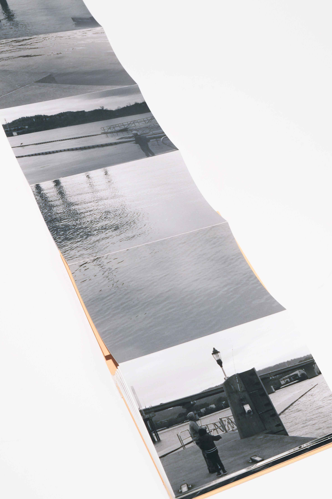
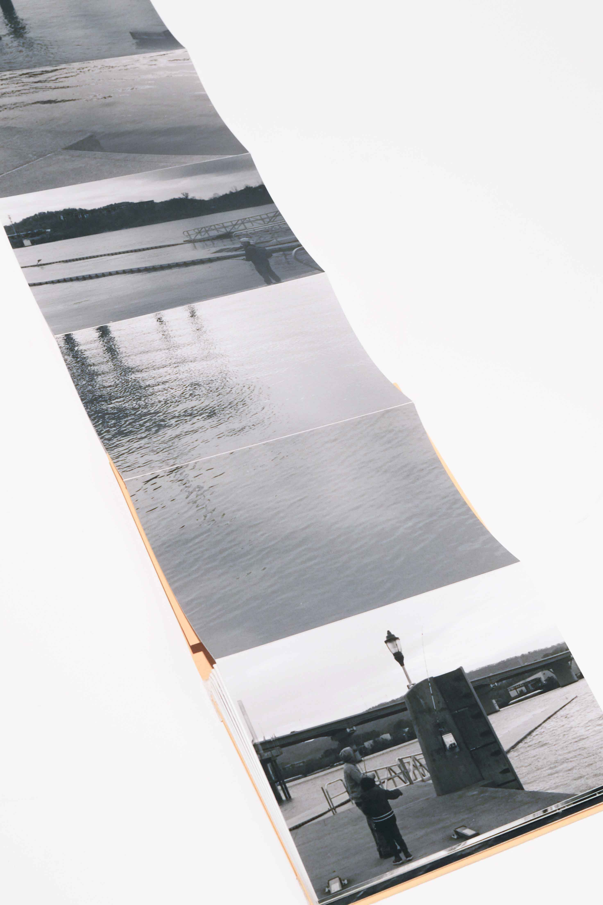

This project is part of a sustained investigation into research regarding my place in the world. In this documentary work, there are intimate moments between the figures, self, and the environment that is thrust upon the work. The photographs bridge the space between the safety of personal intimacies and their counterparts, being the Christian religion and belief structures. The environmental images, which have their history tied to many straight and masculine photographers in the medium navigate the tension within this medium itself. With this contextualization, the work creates a multifaceted space in which many problematic structures are called into question, and the history associated with men in photography.
 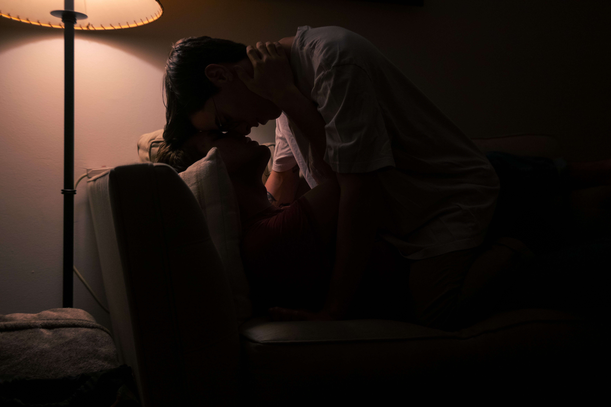
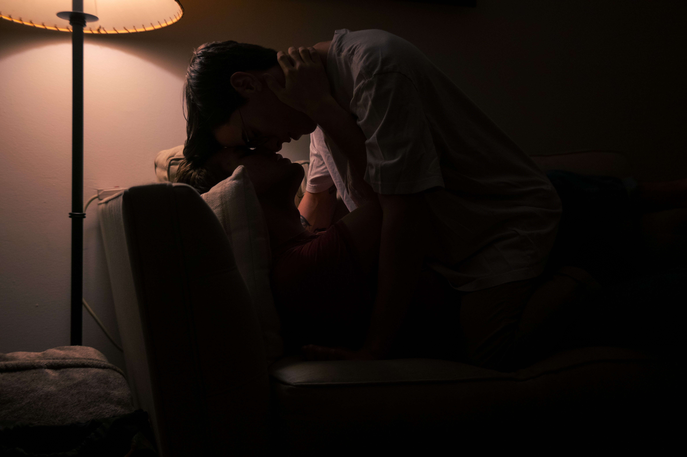

With the landscape of studio photography, my interest in this work lies in understanding the differences between me and my twin brother. Because this work builds off of the tension between religion and sexuality found in my Field Work series, I brought in depictions of my brother as a way to examine my masculine ties to photography, as well as examining more traditional depictions of masculinity that my brother falls into.
 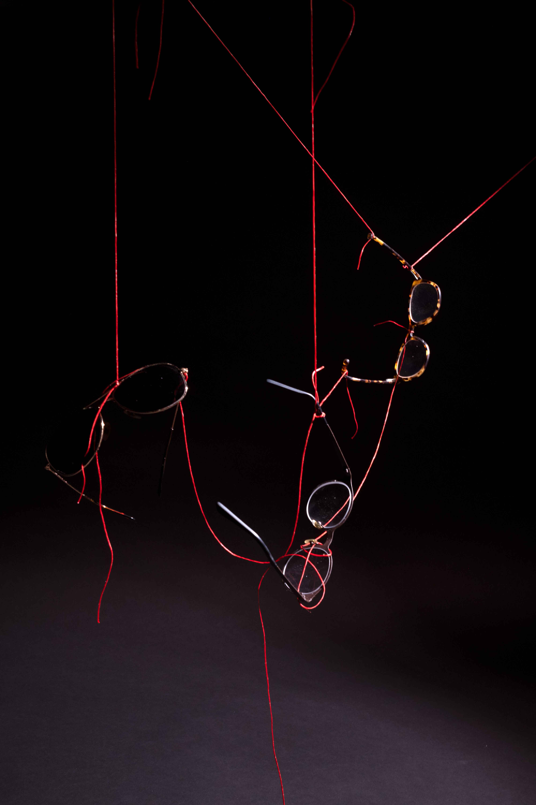
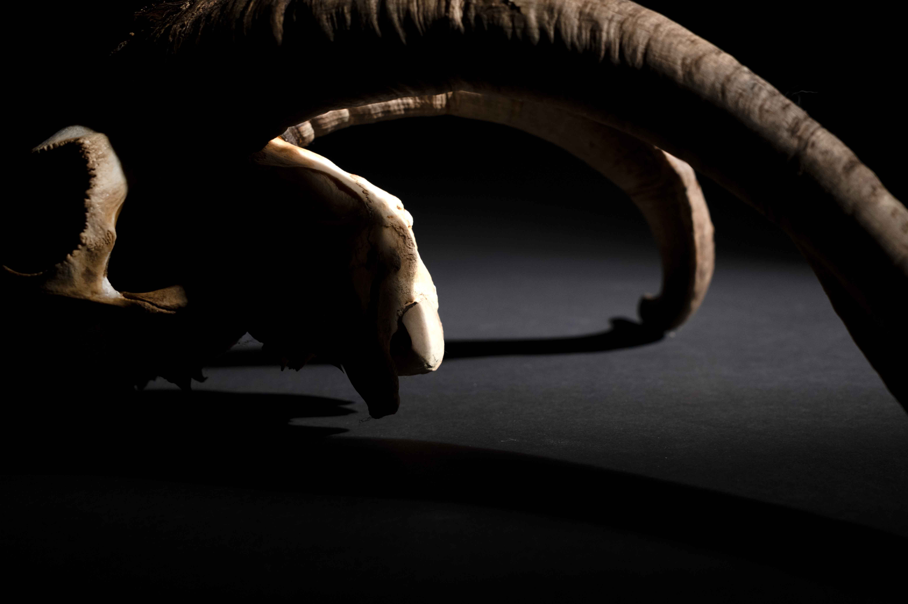
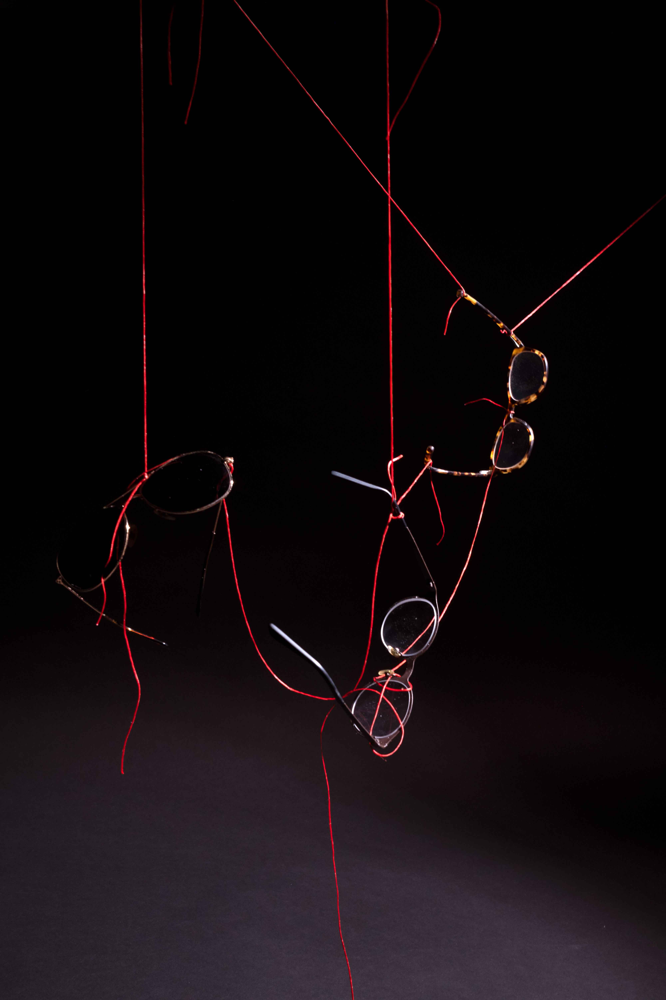
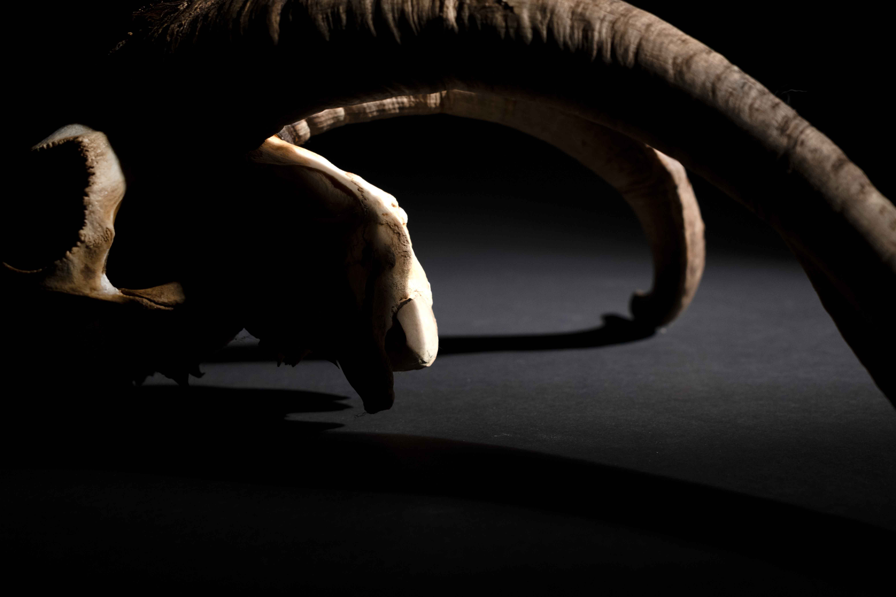
Drawing from Russian Suprematism, my photographic research shifts with the use of photomontage that creates a model that is spatially disruptive and is in conversation with culture through the use of recycled imagery that is digitally manipulated. As I am revealing more to myself about the latent space of my internalizations, the work in and of itself is a reveal of a self-portrait. The digital texturing found throughout the piece discusses older systemic problems in the United States and its attachment to the contemporary.
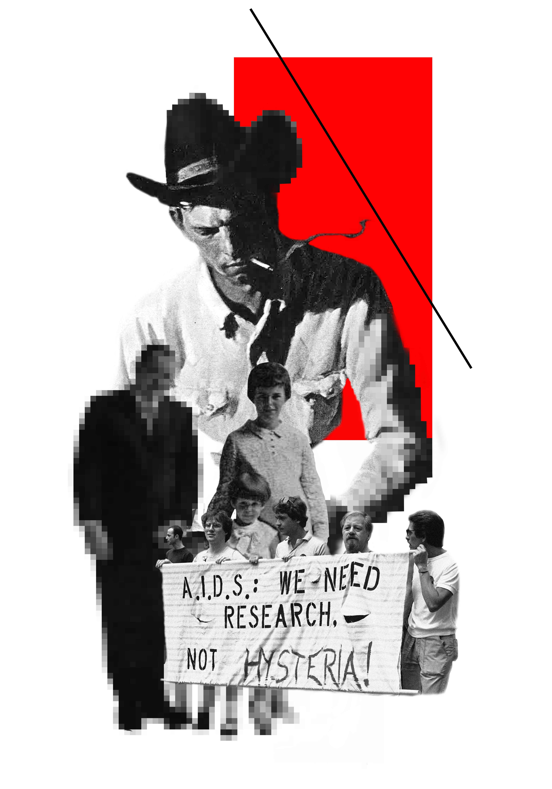 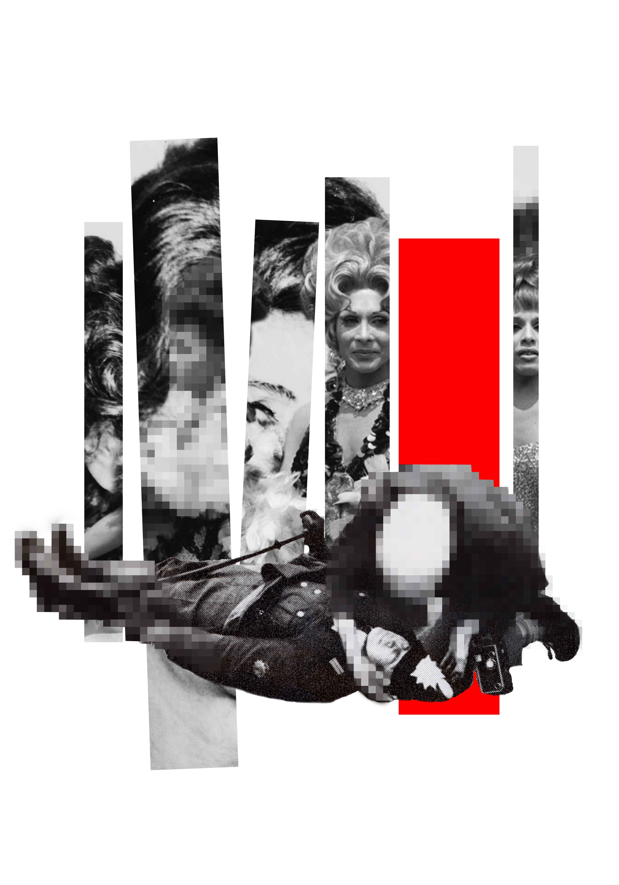 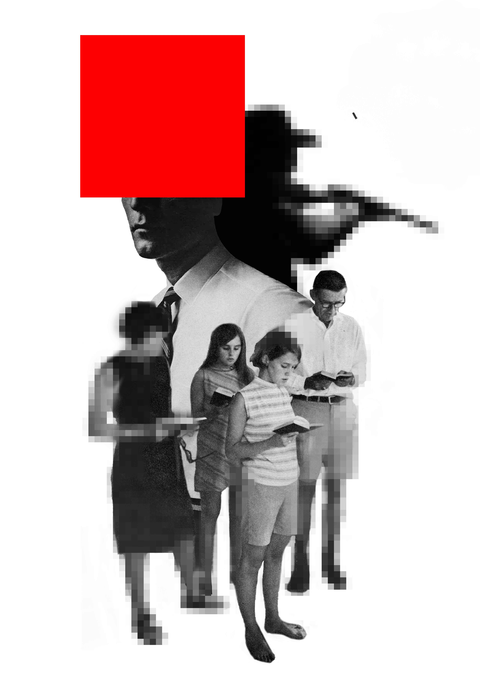 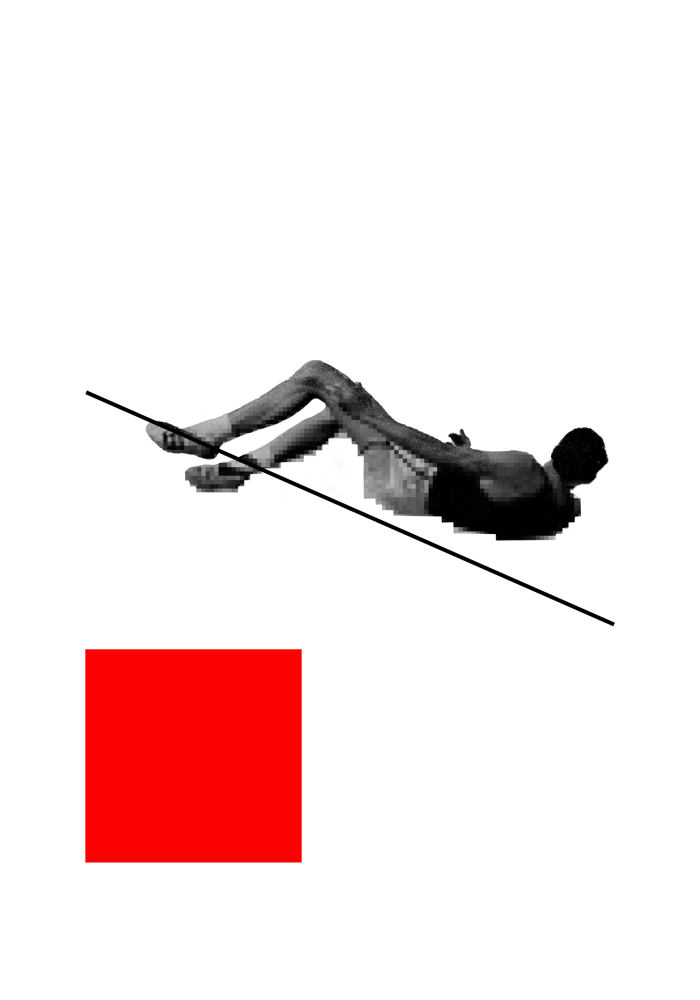In the culmination of my photographic research, I present my most vulnerable self. Leading with a main image consisting of a nude self-portrait,
this work is a confrontation with self, environment, and masculinity as a gay man in the southern United States.
The coupled writings and subsequent other transparent images speak to external pressures within the work itself.
The transparency serves as a veil that masks a viewing of the work, bringing the viewer back to reality.
The entire body of work was caught up in the mediation of thoughts and ideas by the receding of visual information, while that is
still present here, the work builds upon my prior techniques with other varieties, such as cyanotypes, transparencies
(as mentioned prior), and other physical ephemera. Represented are the journeys, liberations, and influences upon myself,
and the queer people in my life. In an attempt to discover my own liberation, the work hinges upon two main principles,
the desire to understand the feelings I've previously accepted, and how the navigation of the external world will continue from what I've
learned. For many friends around me, their relationships with other queer people are a refuge to survive.
Note: some images are blurred as they are not safe for the web, and are only viewable in physical shows.
The chance for unfit salvation.
A dream cast in flux, in solitude, in duress.
Signaling to one another, the propagation of an unfit future.
I am lustfully dreaming of a place between the hyacinths
while making promises boys shouldn't make to other boys.
Mellow-like, he stalls, within himself, staring still at his own hyper fixations
In order to cope with a trade-off.
Thy kingdom come,
On Earth.
As it is.
Sleepless nights at the cusp of moonlight,
among the bouts of tolerant conjecture that metastasized
into the fabric of my being.
We were told that this stretch of day bleeds into the rest,
An inescapable fact that our existence creates a danger.
That insecurity was a simple satisfaction.
That was an omen of the past.
Bouts of forgiveness plague me now.
A great longing was heard,
and farrowed into nothingness.